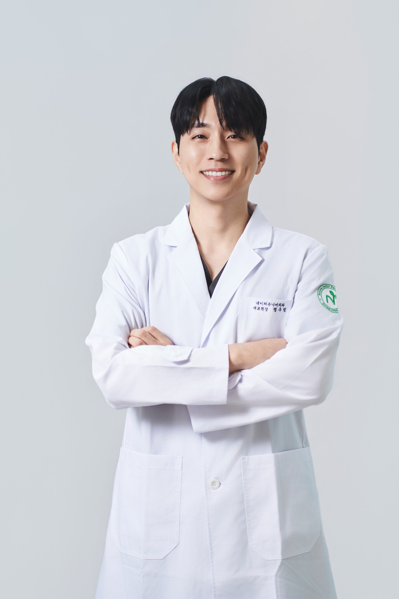
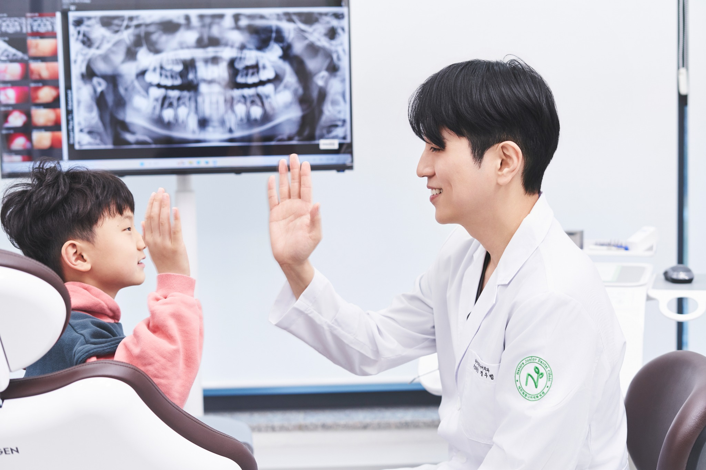
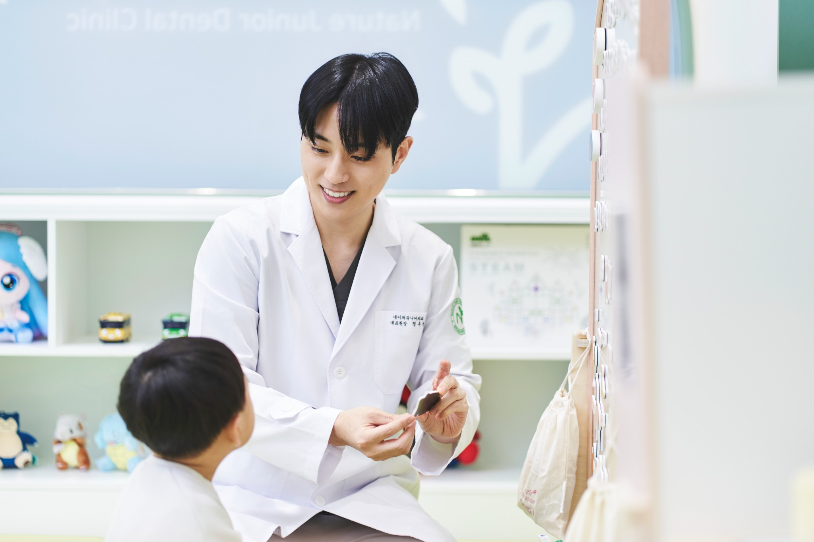
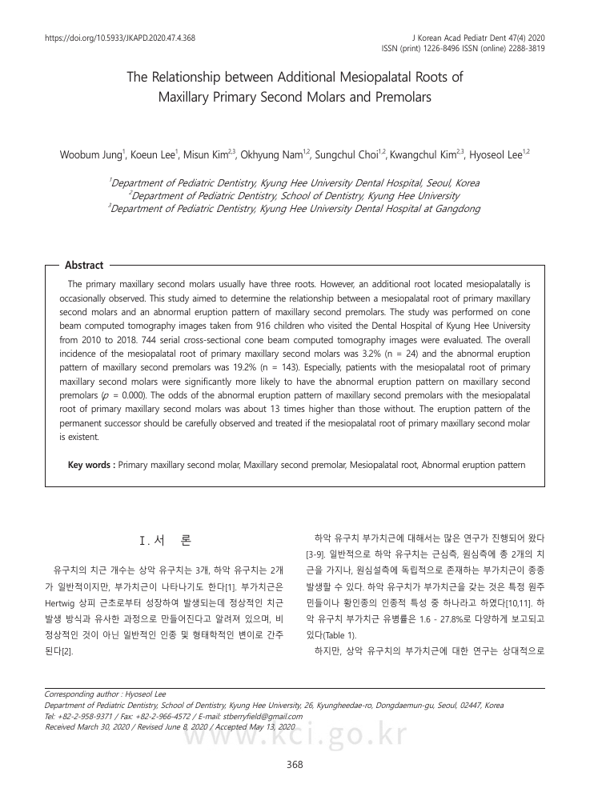
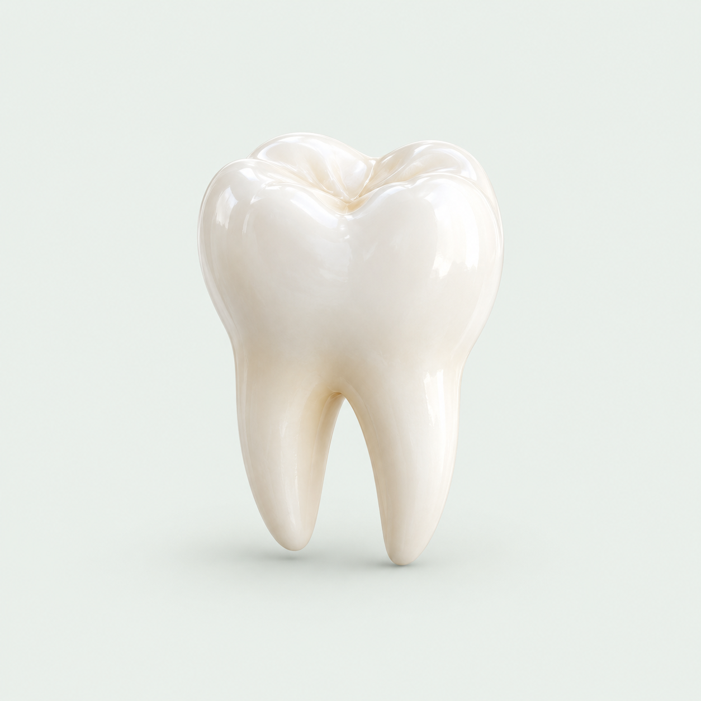

눈높이
아이가 이해할 수 있는 말로 설명합니다.

01 / MEET THE DOCTOR
배움과 경험을 쌓아, 한 아이의 진료에 담습니다.
네이처쥬니어치과의원 · 소아치과

02 / MY APPROACH
치아를 살피기 전에,
아이의 마음부터.
아이가 이해할 수 있는 말로 설명합니다.
치료의 이유와 선택지를 함께 살핍니다.
오늘의 치아와 내일의 변화를 이어 봅니다.
NATURE JUNIOR JOURNAL
아이와 부모를 위한 치과 이야기.

EDITOR'S PICK가기 전의 한마디부터 진료실에서의 첫 만남까지.
DOCTOR'S FILM
말투와 표정, 설명하는 방식까지.
영상 표지·구성 시안입니다. 실제 영상은 아직 연결되지 않았습니다.
NATURE DAILY
작은 순간에도, 네이처다운 마음.
RESEARCH ARCHIVE
진료의 질문에서 시작한 연구.

ORIGINAL PAPER유치의 뿌리 형태와 후속 영구치가 나오는 양상 사이의 관계를 살펴본 연구입니다.
NEWS & PRESS
공식 매체에 남은 원장님의 활동 기록.
TAKE CARE, TOGETHER
궁금할 때 다시 꺼내 보는 작은 설명서.

WITH YOUR WARM WORDS
보내주신 따뜻한 마음, 오래 기억하겠습니다.
아이의 속도를 기다려 주는 설명이 특히 고마웠습니다.
집에 와서도 다시 볼 수 있는 안내가 있어 마음이 놓였어요.
아이에게 천천히 설명해 주셔서 다음 방문도 덜 걱정됩니다.
부모가 궁금했던 부분까지 차분히 알려주셔서 감사했습니다.
배치 확인을 위한 예시 문구이며, 실제 환자 후기가 아닙니다.
SEE YOU AT NATURE JUNIOR
네이처쥬니어치과의원 진료 안내와 예약